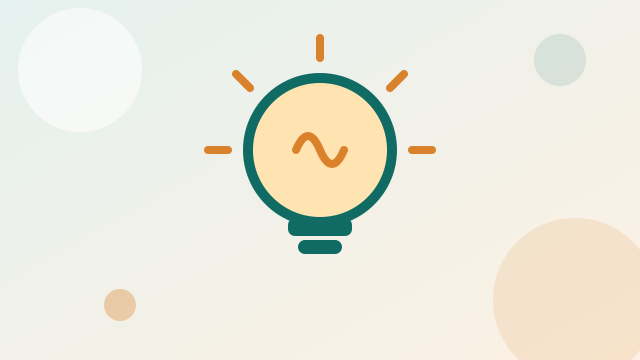

Section 02 of 14
Initial Philosophy
Your beliefs about teaching and learning at the start of the programme.

What to include in this section
- How you believe students learn
- Your role as a teacher
- Inclusion and diversity
- Role of technology in learning
- Cite two or three learning theorists